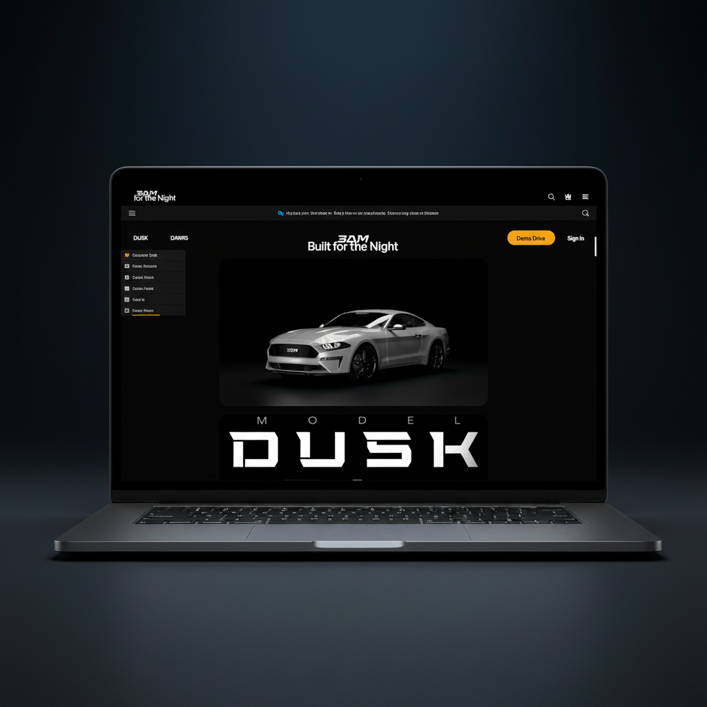
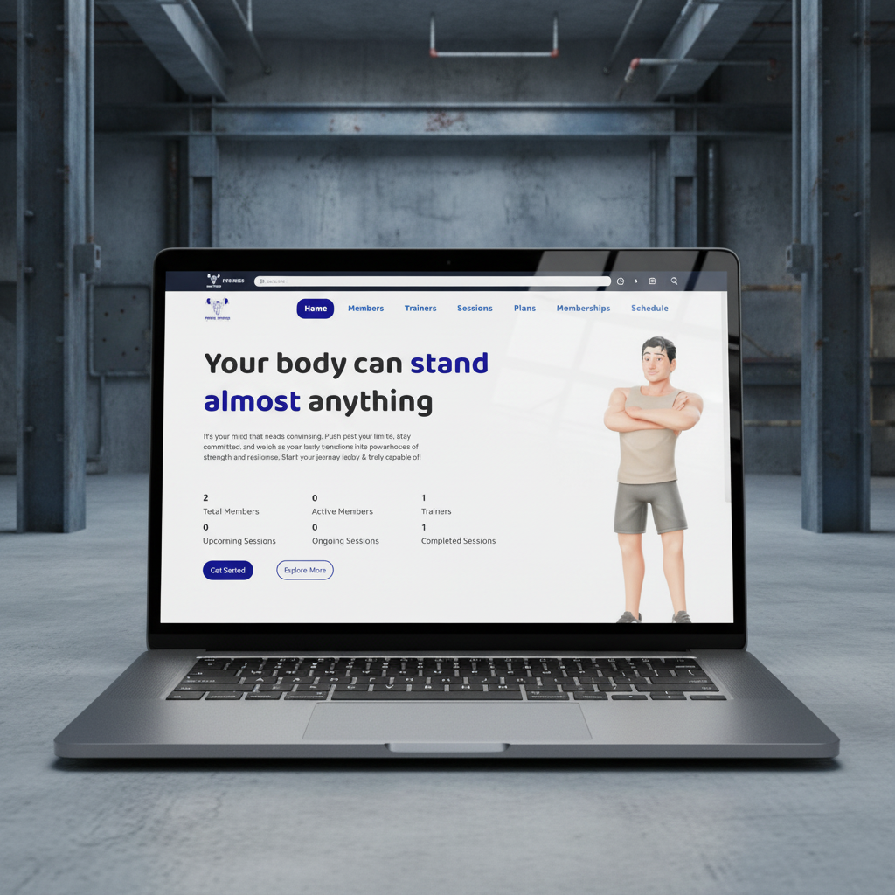

Welcome to my world
Hi, I'm
Ali Mustafa
.NET Back End Engineer
I help teams build scalable, high-performance applications through robust .NET RESTful APIs and Clean Architecture.
Welcome to my world
I help teams build scalable, high-performance applications through robust .NET RESTful APIs and Clean Architecture.
I am Ali, driven by a passion for programming and system design. I am a Computer Science student at Cairo University specializing in backend development with C# and .NET. I focus on writing scalable, maintainable backend systems and continuously strengthen my understanding of software architecture and system design.
I have hands-on experience building robust RESTful APIs using ASP.NET Core, implementing secure JWT authentication, and applying Clean Architecture principles. My goal is to ensure data integrity and system performance from the ground up.
Focusing on software engineering principles, algorithms, and system design. Actively applying theoretical knowledge to practical backend architecture projects using the .NET ecosystem.
ASP.NET Core • Web APIs • JWT Auth
Designing secure, scalable RESTful APIs using ASP.NET Core. I implement Clean Architecture and robust authentication to ensure high performance and maintainability.
SQL Server • EF Core • Dapper
Building optimized databases tailored for rapid scaling. Proficient in executing complex queries and managing ORMs alongside micro-ORMs like Dapper for critical paths.
Git & GitHub • Code Quality • Problem Solving
Committed to delivering clean, documented, and tested code. Experienced with version control flows, collaborative development, and tackling complex logic problems.
Efficient schemas optimized for performance and scalability.
Secure and documented RESTful APIs for web & mobile apps.
Building full-featured web applications using the .NET ecosystem.
Robust business logic implementation using .NET.


"Ali's Gym Management System was a standout project. He demonstrated strong back-end proficiency, utilizing ASP.NET MVC, Entity Framework Core, and SQL Server to build a highly structured and scalable system."
"Ali is highly disciplined and capable of handling complex technical topics. His structured problem-solving skills and strong logical thinking make him exceptionally well-suited for advanced data systems."
"Ali demonstrated a strong technical understanding of back-end and front-end concepts. He consistently applies best practices and showcases excellent programming logic, delivering high-quality web solutions."
"Ali's Gym Management System was a standout project. He demonstrated strong back-end proficiency, utilizing ASP.NET MVC, Entity Framework Core, and SQL Server to build a highly structured and scalable system."
"Ali is highly disciplined and capable of handling complex technical topics. His structured problem-solving skills and strong logical thinking make him exceptionally well-suited for advanced data systems."
"Ali demonstrated a strong technical understanding of back-end and front-end concepts. He consistently applies best practices and showcases excellent programming logic, delivering high-quality web solutions."
Have a project in mind or want to discuss the latest in tech? Feel free to reach out.